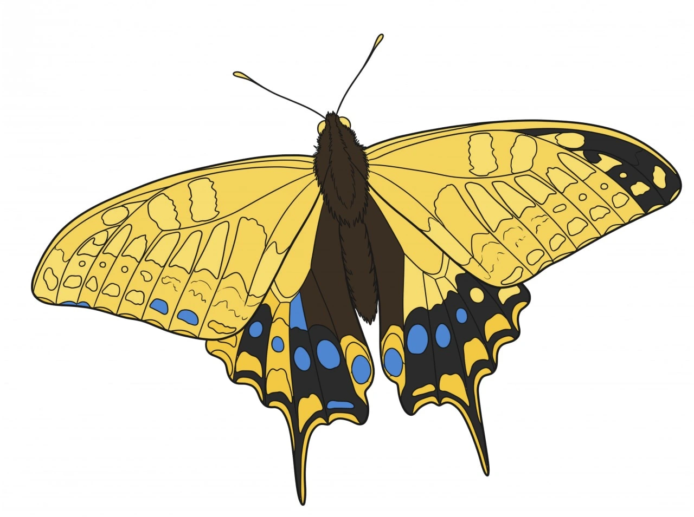
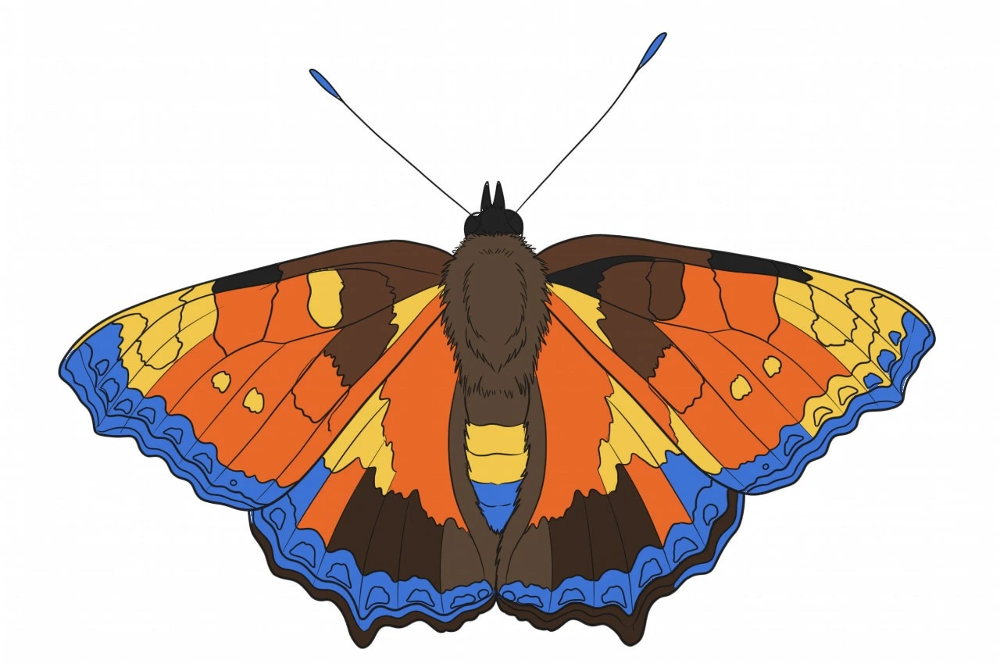
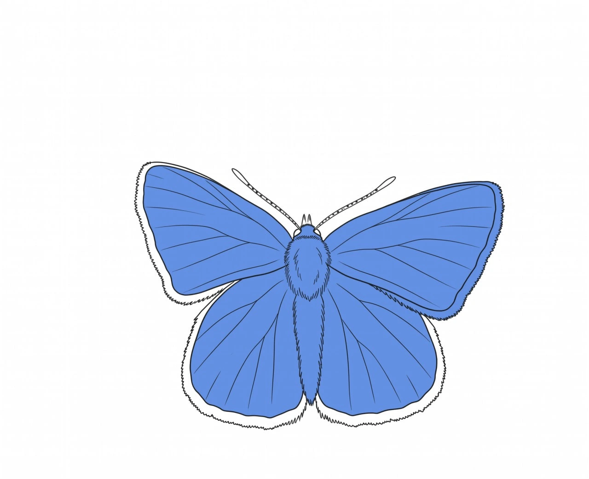
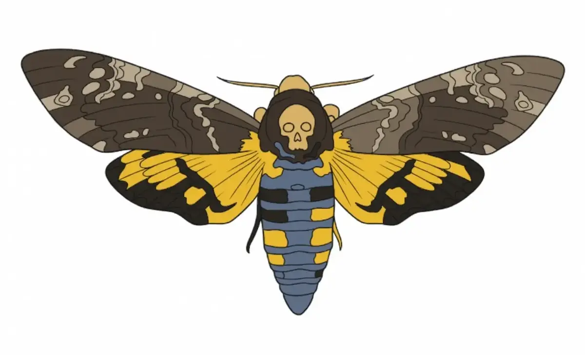

Каталог метеликів Поділля
Ознайомтеся з найпоширенішими та найяскравішими представниками лускокрилих нашого регіону.

Махаон
Один із найбільших та найкрасивіших денних метеликів України. Розмах його крил досягає 9 сантиметрів. Розпізнати махаона легко за яскраво-жовтим забарвленням із чорним візерунком та характерними "хвостиками".

Сонцевик кропив'яний
Цей яскравий цегляно-червоний метелик із чорними та жовтими плямами — справжній вісник весни. Свою назву отримав через те, що його гусінь харчується виключно листям кропиви.

Синявець Ікар
Невеликий, але надзвичайно виразний метелик. Самці мають яскраво-блакитні крила з металевим відблиском, тоді як самки зазвичай коричневі з помаранчевими лунками по краю.

Бражник "Мертва голова"
Найбільший нічний метелик Європи. Свою назву отримав через унікальний малюнок на спинці, що нагадує череп. Відомий тим, що вміє видавати гучний писк і часто пробирається у вулики.